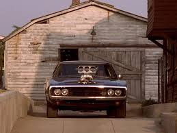
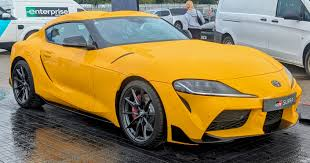

Un coche no es solo metal; es un sueño sobre ruedas, libertad y la mejor terapia con cuatro ruedas y un motor que te mueve por el mundo, ¡una máquina que te permite vivir la aventura de la velocidad o simplemente disfrutar del camino!.
Algunos vehiculos y sus objetivos

onjetivo
Objetivo de los carros:.
El objetivo principal de los carros es proporcionar movilidad personal, libertad y conveniencia para transportar personas y cosas de un lugar a otro, superando las limitaciones del transporte público y permitiendo el acceso a áreas remotas. Además de su función básica de transporte, los autos modernos buscan ofrecer seguridad, confort, eficiencia y conectividad, integrando tecnologías avanzadas, mientras que la industria se orienta hacia la sostenibilidad mediante vehículos eléctricos e híbridos para reducir el impacto ambiental.

⚡las velocidad en los coches deportivos
La velocidad nos une.
Los carros deportivos alcanzan velocidades impresionantes, con modelos de producción superando los 400 km/h, destacando el SSC Tuatara (532.93 km/h), Hennessey Venom F5 (499 km/h) y el Bugatti Chiron Super Sport 300+ (490.48 km/h), aunque las velocidades máximas pueden variar según el modelo, la versión y las condiciones de prueba.

⌛ El mejor carro del mundo
El Toyota Supra es considerado uno de los mejores coches del mundo porque combina un motor legendario, el 2JZ-GTE, famoso por su resistencia y capacidad de soportar más de 1.000 caballos sin perder fiabilidad, con un diseño icónico que sigue siendo moderno décadas después. Además, es el rey del tuning gracias a lo fácil que es modificarlo y convertirlo en una máquina extrema, lo que lo hizo protagonista de competencias, videojuegos y películas como Rápido y Furioso, elevándolo a la categoría de mito. A esto se suma su excelente equilibrio entre potencia, manejo, durabilidad y tracción trasera, creando un coche que no solo es rápido, sino preciso, estable y capaz de transmitir emociones únicas al conducirlo.
onjetivo
Objetivo de los carros:. El objetivo principal de los carros es proporcionar movilidad personal, libertad y conveniencia para transportar personas y cosas de un lugar a otro, superando las limitaciones del transporte público y permitiendo el acceso a áreas remotas. Además de su función básica de transporte, los autos modernos buscan ofrecer seguridad, confort, eficiencia y conectividad, integrando tecnologías avanzadas, mientras que la industria se orienta hacia la sostenibilidad mediante vehículos eléctricos e híbridos para reducir el impacto ambiental.
⚡las velocidad en los coches deportivos
La velocidad nos une.
Los carros deportivos alcanzan velocidades impresionantes, con modelos de producción superando los 400 km/h, destacando el SSC Tuatara (532.93 km/h), Hennessey Venom F5 (499 km/h) y el Bugatti Chiron Super Sport 300+ (490.48 km/h), aunque las velocidades máximas pueden variar según el modelo, la versión y las condiciones de prueba.
⌛ El mejor carro del mundo
El Toyota Supra es considerado uno de los mejores coches del mundo porque combina un motor legendario, el 2JZ-GTE, famoso por su resistencia y capacidad de soportar más de 1.000 caballos sin perder fiabilidad, con un diseño icónico que sigue siendo moderno décadas después. Además, es el rey del tuning gracias a lo fácil que es modificarlo y convertirlo en una máquina extrema, lo que lo hizo protagonista de competencias, videojuegos y películas como Rápido y Furioso, elevándolo a la categoría de mito. A esto se suma su excelente equilibrio entre potencia, manejo, durabilidad y tracción trasera, creando un coche que no solo es rápido, sino preciso, estable y capaz de transmitir emociones únicas al conducirlo.
Datos Curiosos sobre los vehiculos
Los carros esconden datos sorprendentes: el primer automóvil eléctrico se inventó en 1835, mucho antes de que los motores a gasolina se hicieran populares; el aire acondicionado del carro fue un lujo tan costoso que, en los años 40, costaba más que varios autos usados. También es curioso que el Ferrari original no era rojo: este color se volvió obligatorio en competencias internacionales para identificar a los autos italianos. El coche más rápido del mundo, el Bugatti Chiron Super Sport 300+, supera los 490 km/h, mientras que el carro más vendido de la historia no es un deportivo, sino el humilde Toyota Corolla. Además, un motor de combustión convierte en movimiento solo el 30% de la energía del combustible, el resto se pierde como calor, y, por último, los airbags reducen hasta un 30% el riesgo de muerte en accidentes graves, siendo uno de los inventos más importantes en la seguridad vial.
La caja de cambios es uno de los componentes más importantes de un carro, ya que se encarga de transmitir la potencia del motor a las ruedas mediante diferentes relaciones de engranajes. Su función principal es permitir que el motor trabaje siempre en un rango óptimo de revoluciones, evitando que se esfuerce demasiado o que pierda fuerza al acelerar. Existen dos tipos principales: la caja manual, donde el conductor decide cada cambio de marcha, y la automática, que selecciona las velocidades por sí misma según la aceleración y la velocidad del vehículo. Gracias a la caja de cambios, el carro puede arrancar suavemente, subir pendientes sin dificultad y alcanzar velocidades altas manteniendo estabilidad y eficiencia.
La potencia máxima de un carro es la medida que indica cuánta fuerza puede generar su motor cuando trabaja al límite, y es uno de los factores más importantes para determinar su velocidad y rendimiento. Los carros de producción más potentes del mundo superan fácilmente los 1.500 caballos de fuerza, como el Bugatti Chiron Super Sport o el Koenigsegg Jesko Absolut, que combinan motores V8 o W16 con sistemas de turboalimentación avanzados. En el mundo del tuning, algunos motores modificados, como el legendario 2JZ o los V8 de alto desempeño, pueden alcanzar más de 2.000 o incluso 3.000 caballos, logrando aceleraciones extremas y velocidades superiores a los 400 km/h. La potencia máxima no solo depende del tamaño del motor, sino también del tipo de combustible, la calidad del turbo, la refrigeración y la eficiencia del sistema de admisión y escape.
Ubicación
Aquí amamos lo carros y todo que conlleve adrenalina ¿Estás listo lo imposible?